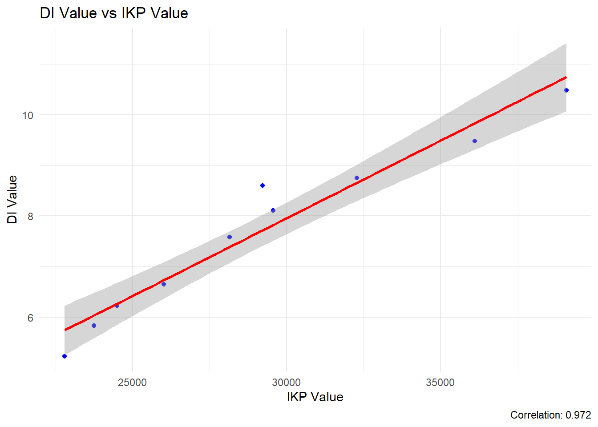
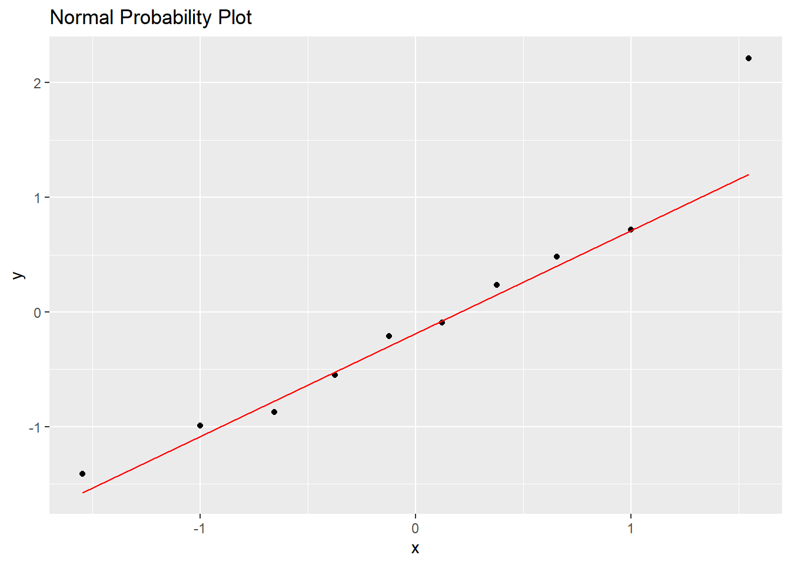
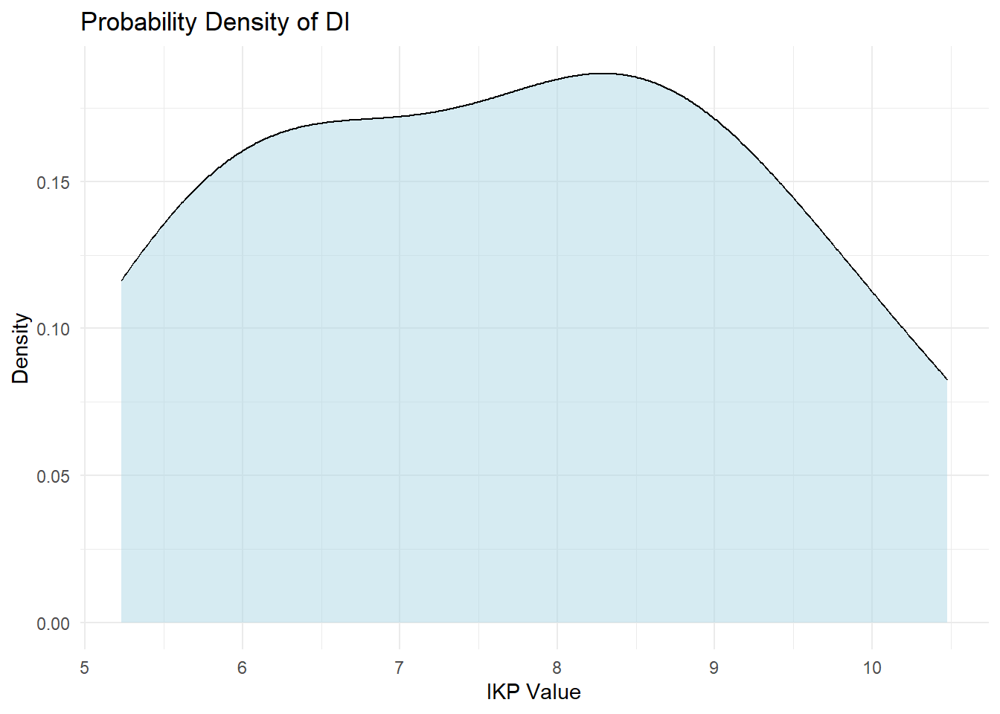

# 1. Aprakstošā statistika# tabulas vizualizācijasmerged_data %>%kbl(caption =paste0("Darbaspēka izmaksas un IKP vērtības pēc gadiem"),col.names =c("Gads", "Darba izmaksas", "IKP") ) %>%kable_styling()
Darbaspēka izmaksas un IKP vērtības pēc gadiem
Gads
Darba izmaksas
IKP
2014
5.23
22791
2015
5.83
23744
2016
6.23
24498
2017
6.65
26017
2018
7.58
28153
2019
8.11
29567
2020
8.60
29224
2021
8.75
32285
2022
9.48
36104
2023
10.48
39072
Code
# sākotnējais grafiksggplot(merged_data, aes(x=year)) +geom_line(aes(y=di_value),color="#69b3a2", size=2 )+geom_line(aes(y=ikp_value/coeff),color="grey", size=2 )+scale_y_continuous(name ="Darbaspēka izmaksas",# Add a second axis and specify its featuressec.axis =sec_axis(~.*coeff, name="IKP") )+theme_ipsum() +theme(axis.title.y =element_text(color ="#69b3a2", size=13),axis.title.y.right =element_text(color ="grey", size=13) ) +ggtitle("Darbaspēka izmaksas un IKP vērtības pēc gadiem")+labs(caption =paste0("IKP tiek attēlots mērogā 1:", coeff))
Datu analīze :
Korelācija
Code
# Korelācijas aprēķins un attēlošanacorrelation_result <-cor(merged_data$di_value, merged_data$ikp_value)cat("Korelācijas koeficiets : ",round(correlation_result,3))
Korelācijas koeficiets : 0.972
Code
scatter_plot <-ggplot(merged_data, aes(x = ikp_value, y = di_value)) +geom_point(color ="blue") +geom_smooth(method ="lm", color ="red") +labs(title ="DI Value vs IKP Value",x ="IKP Value",y ="DI Value",caption =paste("Correlation:", round(correlation_result, 3)) ) +theme_minimal()print(scatter_plot)

Regresijas veidošana
Regresijas modeļa analīze:
------------------------
Atakarīgais mainīgais: Darba izmaksas
Neotkarīgais mainīgais: IKP
------------------------
Koeficienti:
Intercept: -1.2609 (p-value: 0.141 )
Slope: 3e-04 (p-value: 0 )
------------------------
Model Fit:
R-squared: 0.9455
Adjusted R-squared: 0.9387
F-statistic: 138.7025 on 1 and 8 DF
p-value: 0
ANOVA
Code
# ANOVA anova_result <-anova(regression_model)cat("ANOVA rezultāts darba izmaksu un IKP regresijai:")
ANOVA rezultāts darba izmaksu un IKP regresijai:
Code
anova_result
Analysis of Variance Table
Response: di_value
Df Sum Sq Mean Sq F value Pr(>F)
ikp_value 1 24.4428 24.4428 138.7 2.473e-06 ***
Residuals 8 1.4098 0.1762
---
Signif. codes: 0 '***' 0.001 '**' 0.01 '*' 0.05 '.' 0.1 ' ' 1
Code
# Normal Probability Plotggplot(data =data.frame(residuals =rstandard(regression_model)), aes(sample = residuals)) +stat_qq() +stat_qq_line(color ="red") +labs(title ="Normal Probability Plot")# Density Plot for DI vluesggplot(merged_data, aes(x = di_value)) +geom_density(fill ="lightblue", alpha =0.5) +labs(title ="Probability Density of DI", x ="IKP Value", y ="Density") +theme_minimal()


Prognozes veidošana
Prognozes veidošanai tiek izveidotas izmantot regresijas modelis un prognozētās IKP vērtības]